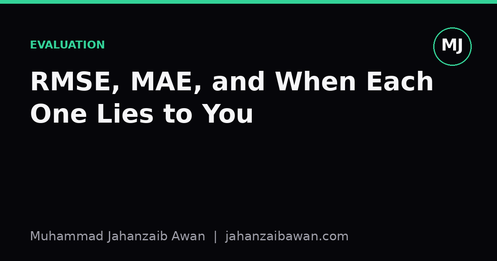

RMSE, MAE, and When Each One Lies to You
Two of the most common regression metrics can rank the same models differently. Understanding why comes down to how each one treats large errors.

Why this choice quietly shapes your model
When I first started comparing regression models, I treated RMSE and MAE as interchangeable, two ways of saying roughly the same thing about error. That is a mistake I no longer make. They can disagree about which model is better, and when they do, it is not noise, it is information about the shape of your errors. Choosing the wrong metric for the problem you actually have can lead you to pick a model that performs worse where it matters most.
Root Mean Squared Error and Mean Absolute Error both summarise prediction error into a single number, but they get there differently. MAE takes the absolute difference between prediction and truth for each point and averages it. RMSE squares each difference, averages the squares, then takes the square root. That squaring step is the whole story. It means RMSE punishes large errors disproportionately more than small ones, while MAE treats every unit of error the same regardless of size.
A worked example that shows the split
Suppose you are predicting house prices in thousands of pounds, and you have five test points with these absolute errors: 2, 3, 3, 4, and 40. That last one is a property your model badly misjudged, perhaps an unusual listing with features outside the normal range.
MAE here is the simple average: (2 + 3 + 3 + 4 + 40) divided by 5, which gives 10.4. RMSE requires squaring first: 4, 9, 9, 16, and 1600, summed to 1638, divided by 5 gives 327.6, and the square root of that is roughly 18.1. Notice the gap. MAE says your typical error is about 10.4, which feels close to the four small errors you actually have. RMSE says 18.1, a number no single point resembles, because it has been dragged upward by that one outlier of 40.
Now imagine a second model with errors of 5, 6, 6, 7, and 8, no huge misses but consistently a bit worse on ordinary cases. MAE for this model is 6.4, clearly better than the first model's 10.4. But RMSE for this model is about 6.6, comfortably better than the first model's 18.1 as well. In this case both metrics agree the second model wins, and that agreement is itself useful information: it tells you the first model's problem is not general mediocrity but one damaging outlier. If you only looked at RMSE, you would already know that. If you only looked at MAE, you would still find it, just less dramatically, and you would have no direct signal that a single point was responsible.

When each metric actively misleads you
RMSE lies to you when a handful of extreme errors are not actually representative of how your model behaves for the audience you serve. Suppose a model predicting delivery times is usually accurate to within a few minutes, but for a tiny number of long-haul edge cases it is off by hours. If those edge cases are rare and clearly flagged as a separate service tier, RMSE will still report a large number that suggests the model is unreliable, when in fact ninety-nine percent of predictions are tight. Someone skimming a dashboard and seeing a high RMSE might reject a genuinely strong model because the metric amplified a small, explainable minority of cases.
MAE lies to you in the opposite direction. It quietly tolerates a model that gets everything roughly right but occasionally produces a catastrophic error, because that single bad prediction is diluted evenly across the average rather than surfaced. If you are forecasting demand for a warehouse and an occasional wild underprediction leads to stockouts, MAE might tell you the model looks fine on average while the business keeps getting hurt by rare but severe misses. In domains where large errors carry disproportionate cost, such as medical dosing or financial risk, MAE's forgiveness of tail events is a genuine liability, not a neutral simplification.
There is also a subtler failure mode: comparing RMSE and MAE across different datasets or different train-test splits without checking that the underlying error distributions are comparable. A model evaluated on a test set with one unlucky extreme case can show a wildly different RMSE than the same model on a slightly different split, even though its typical performance has not changed. This is one more reason leakage-aware, carefully constructed splits matter, because an unrepresentative test set does not just bias your headline number, it can flip which metric agrees with which and lead you to draw the wrong conclusion about model quality.
A practical way to decide
My rule of thumb is to report both, always, and to look at the ratio between them rather than either number alone. If RMSE is close to MAE, your errors are fairly uniform and either metric tells a similar story. If RMSE is substantially larger than MAE, that gap is itself diagnostic, it tells you there are a small number of large errors dragging the squared metric upward, and it is worth plotting the residuals directly rather than trusting a single summary statistic.
Beyond that, let the cost structure of the actual decision drive the choice. If large errors genuinely cost more than proportionally, for instance because a big miss triggers a costly downstream failure, RMSE's sensitivity to outliers is a feature, not a flaw, and you should treat it as the primary metric. If all errors of a given size matter equally regardless of scale, or if you know your data contains a few unrepresentative extreme cases you do not want dominating your evaluation, MAE gives you a fairer picture of typical performance. Median absolute error is worth keeping in your back pocket too, since it is even more robust to outliers than MAE and can be a useful third opinion when the other two disagree sharply.
The honest takeaway is that neither metric is more correct than the other in the abstract. Each answers a different question: MAE asks how wrong you typically are, RMSE asks how wrong you are when you account for the pain of being very wrong. Knowing which question your problem actually needs answered, before you look at either number, is what stops a metric from quietly lying to you.